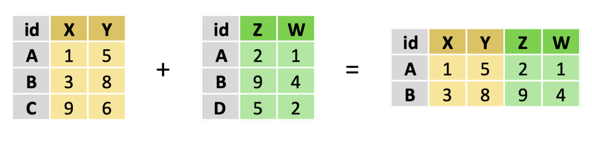
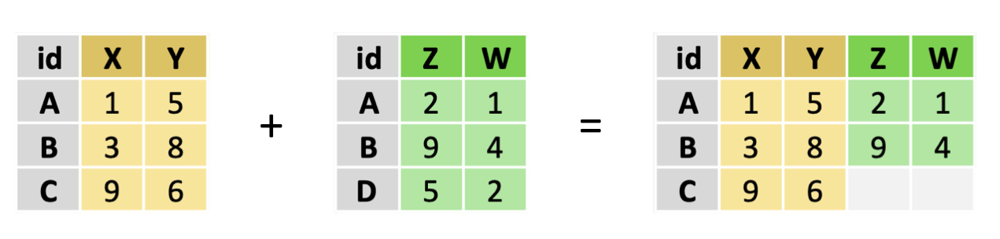
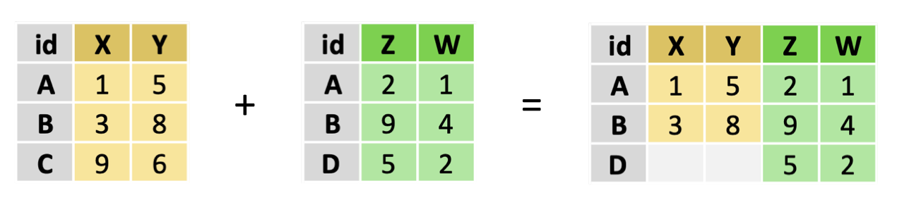
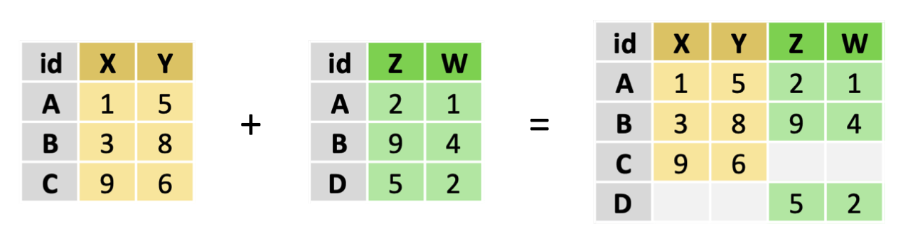

library(doremifasolData)
filosofi_com_2016 <- filosofi_com_2016[, c("CODGEO", "MED16", "TP6016")]
cog_com_2019 <- cog_com_2019[, c("com", "typecom", "libelle", "dep")]22 Joindre des tables de données
22.1 Tâches concernées et recommandations
Vous souhaitez apparier deux tables de données selon une ou plusieurs variables de jointure.
Tâche concernée et recommandation
- Pour des tables de données de taille petite et moyenne (inférieure à 1 Go ou moins d’un million d’observations), il est recommandé d’utiliser le package
dplyrouR base. Le packagedplyrest présenté en détail dans la fiche [Manipuler des données avec letidyverse] ; - Pour des tables de données de grande taille (plus de 1 Go ou plus d’un million d’observations), il est recommandé d’utiliser le package
data.tablequi fait l’objet d’une autre fiche. Ce package est présenté en détail dans la fiche [Manipuler des données avecdata.table]. - Il est vivement recommandé de lire la section Quelques bonnes pratiques sur les jointures avant de réaliser des jointures.
Note
Certains exemples de cette fiche utilisent les données disponibles dans le package doremifasolData ; vous ne pourrez reproduire ces exemples que si ce package est installé sur la machine sur laquelle vous travaillez. Si vous ne savez pas si ce package est déjà installé, consultez la fiche Comment utiliser la documentation utilitR.
22.2 Les différents types de jointure
Une jointure consiste à associer les observations de deux tables à l’aide d’un identifiant présent dans les deux tables, qui prend généralement la forme d’une ou plusieurs variables de jointure. Il existe plusieurs types de jointure. Les principales sont :
- jointure interne (inner join) : la plus courante. Il s’agit de retourner les observations lorsque l’identifiant est présent dans les deux tables.
- jointure à gauche (left join) : renvoie toutes les observations de la table de gauche, même si l’identifiant n’est pas présent dans la table de droite.
- jointure à droite (right join) : l’inverse de la jointure à gauche ; toutes les observations de la table de droite.
- jointure externe (full join) : retourne l’ensemble des observations des deux tables, même lorsque l’identifiant ne se retrouve que dans l’une des tables.
- anti-jointures : retourne les observations de la table de gauche seulement si l’identifiant n’est pas trouvé dans la table de droite (renvoyer les observations dont l’identifiant n’existe pas dans l’autre table). Ce type de jointure est peu utilisé en pratique.
Le graphique ci-dessous illustre les différentes méthodes de jointure :
| Type de jointure | Exemple |
|---|---|
| Jointure interne (inner join) |  |
| Jointure à gauche (left join) |  |
| Jointure à droite (right join) |  |
| Jointure externe (full join) |  |
Note
Pour vous aider à comprendre le principe des jointures, voici une rapide description des opérations que R réalise quand on fait une jointure interne entre deux tables :
-
Risole la première observation de la table de gauche et en extrait l’identifiant (la (ou les) variable(s) de jointure) ; - il compare cet identifiant avec l’identifiant de chacune des observations de la table de droite :
- soit l’identifiant est identique, auquel cas il rajoute dans la table de sortie une nouvelle observation avec les valeurs de l’observation extraite de la table de gauche et celles de l’observation extraite de la table de droite ;
- soit l’identifiant est différent, auquel cas il passe à la suivante de la table de droite.
-
Rpasse ensuite à la deuxième observation de la table de gauche, et ainsi de suite.
Il est très important de comprendre qu’une ligne présente dans une des deux tables peut ainsi se retrouver dans la table finale en plusieurs exemplaires, ou pas du tout.
Dans le cas d’une jointure à gauche (left join), le fonctionnement est le même. La différence est que, pour chaque ligne de la table de gauche, si après avoir balayé toutes les lignes de la table de droite aucune correspondance n’a été trouvée, R ajoute quand même la ligne de gauche dans la table de sortie et met des valeurs manquantes dans les colonnes correspondant à la table de droite. On ne peut donc avoir moins de lignes en sortie que dans la table de gauche ; en revanche on peut en avoir plus si on a des doublons d’identifiant.
Le cas d’une jointure à droite est tout à fait symétrique, et on déduit facilement le cas d’une jointure complète (full join).
22.3 Réaliser une jointure avec R
Cette section présente les principales fonctions permettant de réaliser des jointures selon trois approches de manipulation de données : R base, dplyr et data.table. Les deux dernières approches font l’objet de présentations détaillées dans les fiches [Manipuler des données avec le tidyverse] et [Manipuler des données avec data.table].
Tip
Il est possible de réaliser les jointures avec chacune des trois approches présentées ici. Il est néanmoins conseillé d’être cohérent avec les outils de manipulation de données que vous utilisez. Si vous manipulez vos données avec data.table, il sera préférable d’utiliser la fonction merge de ce package qui est optimisée pour les objets data.table. Si vous manipulez vos données avec le tidyverse, il est recommandé d’utiliser les fonctions du package dplyr.
Les fonctions de jointure vont être illustrées avec la table des communes du code officiel géographique 2019 et les données du répertoire Filosofi 2016 agrégées par commune. Ces tables sont disponibles dans le package doremifasolData. Pour alléger les sorties, on conserve uniquement l’identifiant de commune, le revenu médian 2016 MED16 et le taux de pauvreté TP6016 dans la première table, et l’identifiant de commune com, le type de commune typecom, le nom officiel de la commune libelle et son département dep dans la seconde table.
Voici un aperçu des données :
head(filosofi_com_2016) CODGEO MED16 TP6016
1 01001 22679.00 NA
2 01002 24382.08 NA
3 01004 19721.00 17
4 01005 23378.00 NA
5 01006 NA NA
6 01007 22146.45 NAhead(cog_com_2019) com typecom libelle dep
1 01001 COM L'Abergement-Clémenciat 01
2 01002 COM L'Abergement-de-Varey 01
3 01004 COM Ambérieu-en-Bugey 01
4 01005 COM Ambérieux-en-Dombes 01
5 01006 COM Ambléon 01
6 01007 COM Ambronay 01
Note
Contrairement à d’autres logiciels statistiques, il n’est pas nécessaire ni même utile de trier les tables avant de les joindre avec R. Le faire n’apporte pas de gain de performance (une exception à cette règle est évoquée dans la fiche [Manipuler des données avec data.table]). Il n’est pas non plus nécessaire que les variables de jointure portent les mêmes noms dans les deux tables.
22.3.1 Jointure avec R base
La fonction pour effectuer des jointures en base R est la fonction merge (fusionner). Elle prend les arguments suivants :
- le nom des deux
data.frameà joindre ; - les variables de jointure, définies par les arguments
by.xetby.you par l’argumentby; - le type de jointure défini par les arguments
all,all.xetall.y.
Voici quelques remarques sur l’usage de merge :
Lorsque les variables de jointure portent exactement le même nom dans les deux tables, on les définit par l’argument
by. Sinon, il faut préciserby.x = nom_var_joint_table_gaucheetby.y = nom_var_joint_table_droite;-
Par défaut,
mergeréalise une jointure interne. On peut obtenir d’autres types de jointure avec les argumentsall,all.xetall.y. Voici un aide mémoire :Type de jointure Argument de la fonction mergeJointure à gauche (left join) all.x = TRUEJointure à droite (right join) all.y = TRUEJointure externe (full join) all = TRUE Si deux variables portent le même nom dans les deux tables, alors dans la table jointe le nom de ces variables sera complété par un suffixe
.xet.ypour pouvoir les différencier. Il est possible de modifier ces suffixes avec l’optionsuffixes.Il y a d’autres options plus avancées que vous pouvez consulter avec
?merge.
Voici un exemple dans lequel on utilise merge pour réaliser une jointure à gauche entre la table des données Filosofi et la table des communes du COG.
table_jointe <- base::merge(filosofi_com_2016,
cog_com_2019,
by.x = "CODGEO",
by.y = "com",
all.x = TRUE)
head(table_jointe) CODGEO MED16 TP6016 typecom libelle dep
1 01001 22679.00 NA COM L'Abergement-Clémenciat 01
2 01002 24382.08 NA COM L'Abergement-de-Varey 01
3 01004 19721.00 17 COM Ambérieu-en-Bugey 01
4 01005 23378.00 NA COM Ambérieux-en-Dombes 01
5 01006 NA NA COM Ambléon 01
6 01007 22146.45 NA COM Ambronay 01
22.3.2 Jointure avec dplyr
Avec dplyr, les jointures se réalisent grâce aux fonctions left_join, right_join, inner_join, full_join et anti_join. Ces fonctions prennent les arguments suivants :
- le nom des deux
data.frameà joindre ; - les variables de jointure, définies par l’argument
by. Lorsque la variable de jointure ne porte pas le même nom dans les deux tables, on utilise le paramètreby = c("var_x" = "var_y"). S’il y a plusieurs variables de jointure, on écritby = c("var_x1" = "var_y1", "var_x2" = "var_y2").
Il est préférable d’utiliser ces fonctions sur des objets tibble plutôt que data.frame. On va donc convertir les deux tables avant de présenter un exemple :
Voici un exemple dans lequel on utilise la fonction left_join pour réaliser une jointure à gauche entre la table des données Filosofi et la table des communes du COG.
table_jointe_tbl <- filosofi_com_2016_tbl %>%
left_join(y = cog_com_2019_tbl,
by = c("CODGEO" = "com"))
head(table_jointe_tbl)# A tibble: 6 × 6
CODGEO MED16 TP6016 typecom libelle dep
<chr> <dbl> <dbl> <chr> <chr> <chr>
1 01001 22679 NA COM L'Abergement-Clémenciat 01
2 01002 24382. NA COM L'Abergement-de-Varey 01
3 01004 19721 17 COM Ambérieu-en-Bugey 01
4 01005 23378 NA COM Ambérieux-en-Dombes 01
5 01006 NA NA COM Ambléon 01
6 01007 22146. NA COM Ambronay 01 La syntaxe pour réaliser les autres types de jointure est très similaire :
| Type de jointure | Syntaxe dplyr
|
|---|---|
| Jointure à gauche | left_join(x = filosofi_com_2016_tbl, y = cog_com_2019_tbl, by = c("CODGEO" = "com")) |
| Jointure à droite | right_join(x = filosofi_com_2016_tbl, y = cog_com_2019_tbl, by = c("CODGEO" = "com")) |
| Jointure externe | full_join(x = filosofi_com_2016_tbl, y = cog_com_2019_tbl, by = c("CODGEO" = "com")) |
| Anti-jointure | anti_join(x = filosofi_com_2016_tbl, y = cog_com_2019_tbl, by = c("CODGEO" = "com")) |
22.3.3 Jointure avec data.table
Il existe deux façons de réaliser des jointures avec data.table :
-
la fonction
mergededata.table, dont le fonctionnement est identique à celui de la fonctionmergedeR base; de façon générale, c’est cette approche qu’il faut privilégier pour faire des jointures avecdata.table; -
l’opérateur crochet
[]. Cette approche convient pour des utilisations avancées, lorsque l’approchemergene peut pas être utilisée.
Il est préférable d’utiliser ces fonctions sur des objets data.table plutôt que data.frame. On va donc convertir les deux tables avant de présenter des exemples.
library(data.table)
filosofi_com_2016_dt <- as.data.table(filosofi_com_2016)
cog_com_2019_dt <- as.data.table(cog_com_2019)
Tip
L’un des intérêts d’utiliser le package data.table est qu’il est très efficace pour effectuer des jointures car il est possible d’indexer les tables. L’indexation permet à R de retrouver rapidement les lignes qui correspondent à une valeur de la clé de jointure, accélérant les combinaisons de données.
Il est possible de définir une (ou plusieurs) clé(s) grâce à la commande setkeyv. Pour plus de détails, se reporter à la fiche [Manipuler des données avec data.table].
22.3.3.1 Joindre des objets data.table avec merge
La fonction merge de data.table a un fonctionnement identique à celui de la fonction merge de R base, mais elle est plus rapide lorsqu’on l’utilise pour joindre des objets data.table plutôt que des objets data.frame. Elle prend les arguments suivants :
- le nom des deux
data.frameà joindre ; - les variables de jointure, définies par les arguments
by.xetby.you par l’argumentby; - le type de jointure défini par les arguments
all,all.xetall.y.
Voici un exemple dans lequel on utilise la fonction merge de data.table pour réaliser une jointure à gauche entre la table des données Filosofi et la table des communes du COG.
table_jointe_dt <-
merge(x = filosofi_com_2016_dt,
y = cog_com_2019_dt,
by.x = "CODGEO",
by.y = "com",
all.x = TRUE)
head(table_jointe_dt)Key: <CODGEO>
CODGEO MED16 TP6016 typecom libelle dep
<char> <num> <num> <char> <char> <char>
1: 01001 22679.00 NA COM L'Abergement-Clémenciat 01
2: 01002 24382.08 NA COM L'Abergement-de-Varey 01
3: 01004 19721.00 17 COM Ambérieu-en-Bugey 01
4: 01005 23378.00 NA COM Ambérieux-en-Dombes 01
5: 01006 NA NA COM Ambléon 01
6: 01007 22146.45 NA COM Ambronay 01Comme pour les jointures avec base R, la syntaxe pour réaliser les autres types de jointure est très similaire, il suffit de modifier l’option all, all.x ou all.y. Voici un aide mémoire :
| Type de jointure | Argument de la fonction merge
|
|---|---|
| Jointure à gauche (left join) | all.x = TRUE |
| Jointure à droite (right join) | all.y = TRUE |
| Jointure externe (full join) | all = TRUE |
Il est difficile de réaliser une anti-jointure avec la commande merge. Pour cela, la syntaxe ci-dessous, fondée sur les crochets, s’avère nécessaire.
22.3.3.2 Inner join avec la syntaxe []
Tip
Si vous utilisez data.table, il est préférable de joindre des tables avec merge car cette approche permet d’écrire des codes lisibles et couvre la majorité des besoins. La syntaxe utilisant les crochets [] peut être utilisée dans les cas (peu fréquents) où l’utilisation de merge s’avère complexe, par exemple dans le cas de l’anti-jointure. Avant de lire ce paragraphe, il est recommandé de vous familiariser avec l’opérateur [] dans data.table. Pour cela, vous pouvez vous reporter à la fiche [Manipuler des données avec data.table].
Une manière équivalente mais moins lisible que merge pour effectuer des appariements consiste à utiliser la syntaxe x[y, on = c(xvar1 = yvar1, ...)]. On peut voir x[y, on = c(xvar1 = yvar1)] comme une manière concise d’écrire x[x$var1 %in% y$yvar1, ] en R base. Les personnes habituées à la syntaxe SQL retrouveront une similarité avec la requête suivante :
SELECT *
FROM x
INNER JOIN y ON x.var1 = y.var1Par exemple, pour faire une jointure interne, on pourrait écrire merge(x = filosofi_com_2016_dt, y = cog_com_2019_dt, by.x = "CODGEO", by.y = "com", all = FALSE). Avec la syntaxe alternative, on peut écrire :
filosofi_com_2016_dt[cog_com_2019_dt, on = c("CODGEO" = "com"), nomatch=NULL] CODGEO MED16 TP6016 typecom libelle dep
<char> <num> <num> <char> <char> <char>
1: 01001 22679.00 NA COM L'Abergement-Clémenciat 01
2: 01002 24382.08 NA COM L'Abergement-de-Varey 01
3: 01004 19721.00 17 COM Ambérieu-en-Bugey 01
4: 01005 23378.00 NA COM Ambérieux-en-Dombes 01
5: 01006 NA NA COM Ambléon 01
---
35605: 97420 15110.67 38 COM Sainte-Suzanne 974
35606: 97421 11280.94 58 COM Salazie 974
35607: 97422 14243.81 41 COM Le Tampon 974
35608: 97423 14031.79 42 COM Les Trois-Bassins 974
35609: 97424 12034.38 53 COM Cilaos 974L’argument nomatch sert à définir le comportement pour les valeurs des observations de la table de gauche (filosofi_com_2016_dt) n’ayant pas de clé correspondante dans la table de droite (cog_com_2019_dt). La valeur par défaut est NA, qui signifie que les valeurs de gauche sans correspondance auront des valeurs NA. Avec nomatch=NULL (ou nomatch=0), on retire les observations de x sans correspondance dans y : on effectue ainsi une jointure interne.
Pour effectuer une anti-jointure, il faut sélectionner les clés de x qui n’ont pas de contrepartie dans y, ce qui s’écrit de manière générale x[!y]. Dans notre exemple, cela donne :
filosofi_com_2016_dt[!cog_com_2019_dt, on = c("CODGEO" = "com")]Empty data.table (0 rows and 3 cols): CODGEO,MED16,TP6016Le tableau précédent peut être enrichi :
| Type de jointure | Argument(s) de la fonction merge
|
Approche alternative |
|---|---|---|
| Jointure interne (inner join) |
all = FALSE (défaut) |
X[Y, nomatch=0] |
| Jointure à gauche (left join) | all.x = TRUE |
Y[X] |
| Jointure à droite (right join) | all.y = TRUE |
X[Y] |
| Jointure externe (full join) | all = TRUE |
- |
| Anti-jointure (anti join) | all = TRUE, subset = NA |
X[!Y] |
22.4 Quelques bonnes pratiques sur les jointures
De manière générale, il est important de bien préparer une jointure. Voici une liste non exhaustive de bonnes pratiques qui peuvent permettre d’éviter des erreurs. Ces bonnes pratiques seront illustrées par la jointure entre la table communale du répertoire Filosofi 2016 et la table des communes du code officiel géographique 2019. Cette jointure présente des problèmes dus au fait que le référentiel communal a évolué entre les deux dates.
22.4.1 Avant la jointure
Avant de procéder à une jointure, il est essentiel de vérifier la qualité des identifiants dans les deux tables que l’on veut joindre.
-
Règle n°1 : vérifier la présence de valeurs manquantes dans les variables de jointure.
Une première approche consiste à rechercher les valeurs manquantes (
NA) dans les variables de jointure. Le code suivant permet de calculer le nombre d’observations pour lesquelles l’identifiant est manquant :On voit ici que les variables de jointure ne contiennent aucun
NAdans les deux tables. Toutefois, les valeurs manquantes peuvent prendre des formes plus complexes queNA:0,.,999… c’est pourquoi il est important de procéder à une inspection visuelle des variables de jointure. Pour ce faire, vous pouvez utilisez la fonctionunique(), qui permet d’afficher la liste des valeurs qui apparaissent dans une variable.unique(filosofi_com_2016$CODGEO)[1] "01001" "01002" "01004" "01005" "01006" "01007" "01008" "01009" "01010" [10] "01011" "01012" "01013" "01014" "01015" "01016" "01017" "01019" "01021" [19] "01022" "01023" "01024" "01025" "01026" "01027" "01028" [ reached getOption("max.print") -- omitted 34907 entries ] -
Règle n°2 : vérifier la présence de doublons dans les variables de jointure.
Si les variables de jointure contiennent un grand nombre de fois les mêmes valeurs, la jointure peut devenir très gourmande en ressources, voire irréalisable. Il est donc indispensable de repérer les doublons, et de les traiter si nécessaire. Les deux codes suivants calculent le nombre d’observations dans la table pour chaque valeur des variables de jointure, et affichent les premières lignes par nombre d’observations décroissant. Si la variable
nb_obsest supérieure ou égale à 2, alors il y a des doublons. Le premier code est adapté si vous utiliseztidyversepour manipuler des données, le second si vous utilisezdata.table.# Approche dplyr/tidyverse doublons <- filosofi_com_2016_tbl %>% group_by(CODGEO) %>% summarise(nb_obs = n()) %>% filter(nb_obs > 1) %>% arrange(-nb_obs) doublons# A tibble: 0 × 2 # ℹ 2 variables: CODGEO <chr>, nb_obs <int># Approche data.table doublons <- filosofi_com_2016_dt[, .(nb_obs = .N), by = CODGEO ][nb_obs > 1][order(-nb_obs)] doublonsOn voit ici qu’il n’y a aucun doublon sur les identifiants dans la table issue du répertoire Filosofi. En revanche, on constate qu’il y a un grand grand nombre de doublons sur les identifiants dans la table du code officiel géographique. Cette présence de doublons rend nécessaire une analyse de cette table avant de réaliser la jointure.
Tip
Le fait que les variables de jointure contiennent des valeurs manquantes ou des doublons n’est pas nécessairement un problème. C’est à vous de déterminer si cela pose un problème. Voici deux questions que vous pouvez vous poser pour analyser la situation :
- La (ou les) variable(s) de jointure doi(ven)t-elle(s) impérativement être renseignée(s) pour chaque observation ? Si oui, il ne doit pas y avoir de valeurs manquantes.
- La (ou les) variable(s) de jointure doi(ven)t-elle(s) identifier de façon unique chaque observation ? Si oui, il ne doit pas y avoir de doublons.
-
Règle n°3 : vérifier la compatibilité des variables de jointure.
Il faut vérifier deux choses :
-
Une jointure ne peut être réalisée avec
Rque si les variables de jointure sont de même type. Il faut donc vérifier que c’est le cas. Les types de variables les plus fréquemment utilisées pour des jointures avecRsontinteger(nombre entier),character(chaîne de caractères) etfactor(catégorie). Vous pouvez utiliser la fonctionclasspour connaître le type d’une variable. Dans l’exemple suivant, on voit que les deux variables de jointure sont de typecharacter.
# Type de la variable de jointure dans la table Filosofi class(filosofi_com_2016$CODGEO)[1] "character"# Type de la variable de jointure dans le COG 2019 class(cog_com_2019$com)[1] "character"Si les variables sont de type différent, alors il faut convertir les variables de jointure dans l’une des tables. Pour ce faire, vous pouvez utiliser les fonctions
as.integer,as.characteretas.factor. Si vous convertissez une variable de jointure, il faut refaire les vérifications sur la présence de valeurs manquantes et de doublons.- Une jointure ne peut être réalisée que si les valeurs des variables de jointure de la table de gauche figurent (au moins pour certaines d’entre elles) parmi les valeurs des variables de jointure de la table de droite. Il faut donc le vérifier. Voici deux exemples de code qui peuvent vous aider.
Le premier code affiche le nombre d’identifiants distincts dans chaque table, et le nombre d’identifiants communs aux deux tables. On voit que tous les identifiants de la table issue de Filosofi figurent dans le COG 2019, mais que l’inverse n’est pas vrai.
[1] 34932[1] 37253[1] 34932Le second code donne la liste des identifiants de la table du COG 2019 qui ne figurent pas parmi les identifiants de la table issue de Filosofi.
[1] "01059" "01091" "01097" "01119" "01120" "01122" "01137" "01144" "01154" [10] "01172" "01176" "01182" "01186" "01205" "01218" "01221" "01271" "01292" [19] "01300" "01312" "01316" "01324" "01340" "01341" "01409" [ reached getOption("max.print") -- omitted 2296 entries ] -
Une jointure ne peut être réalisée avec
22.4.2 Après la jointure
Après une jointure, il est essentiel de vérifier que la jointure a bien produit le résultat attendu.
-
Règle n°4 : vérifier que le nombre d’observations de la table de sortie est cohérent.
Par exemple, dans le cas d’une jointure à gauche (left join) et si les variables de la table de droite ne présentent aucun doublon, alors la table de sortie doit avoir le même nombre d’observations que la table de gauche. Dans l’exemple qui suit, on voit que la table issue de la jointure comprend 35609 observations, tandis que la table communale de Filosofi n’en comprenait que 34932. La jointure présente donc un problème (due aux doublons dans la table du COG 2019).
-
Règle n°5 : vérifier la présence éventuelle de valeurs manquantes (
NA) dans les variables d’intérêt.Vous pouvez par exemple utiliser la fonction
is.na()qui permet de repérer les observations manquantes dans les variables provenant de la table de droite. S’il y a des valeurs manquantes, cela peut indiquer que cette variable contient des valeurs manquantes dans la table de droite, ou que certaines observations de la table de gauche n’ont pas de correspondances dans la table de droite. Dans l’exemple qui suit, on voit que le département est manquant pour plusieurs centaines d’observations de la table jointe.# A tibble: 677 × 6 CODGEO MED16 TP6016 typecom libelle dep <chr> <dbl> <dbl> <chr> <chr> <chr> 1 01015 22357 NA COMD Arbignieu <NA> 2 01025 21971. 6 COMD Bâgé-la-Ville <NA> 3 01033 21405. 16 COMD Bellegarde-sur-Valserine <NA> 4 01036 21142. NA COMD Belmont-Luthézieu <NA> 5 01080 21599 NA COMD Champdor <NA> 6 01095 20242. NA COMD Chavannes-sur-Suran <NA> # ℹ 671 more rows
Tip
Si vous faites des jointures avec dplyr, vous pouvez utiliser le package tidylog pour obtenir des informations détaillées sur les jointures réalisées. Cela aide dans la mise en œuvre des bonnes pratiques présentées plus haut. Il faut toutefois être prudent avec ce package si les tables sont volumineuses (plus d’un million d’observations). En effet, ce package réalise de manière sous-jacente plusieurs opérations de jointures, ce qui risque de saturer la mémoire de R.
22.5 Pour en savoir plus
- la fiche [Manipuler des données avec le
tidyverse] ; - la fiche [Manipuler des données avec
data.table] ; - un tutoriel sur les jointures en SQL (entièrement en français) ;
- un tutoriel de Lise Vaudor sur les jointures en
dplyr; - la section consacrée à
dplyrde la formation de Julien Barnier ; - les formations du MTES ;
- ce tutoriel sur les jointures avec data.table.
- la vignette du package
tidylog